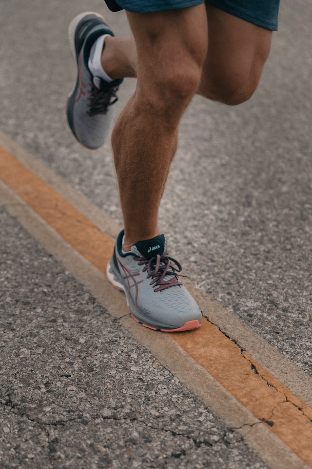
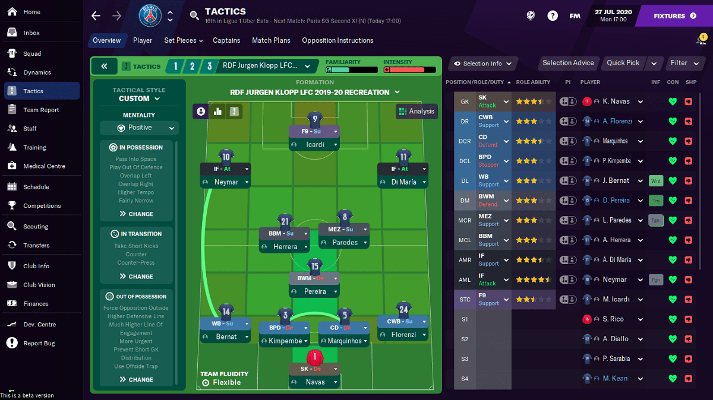
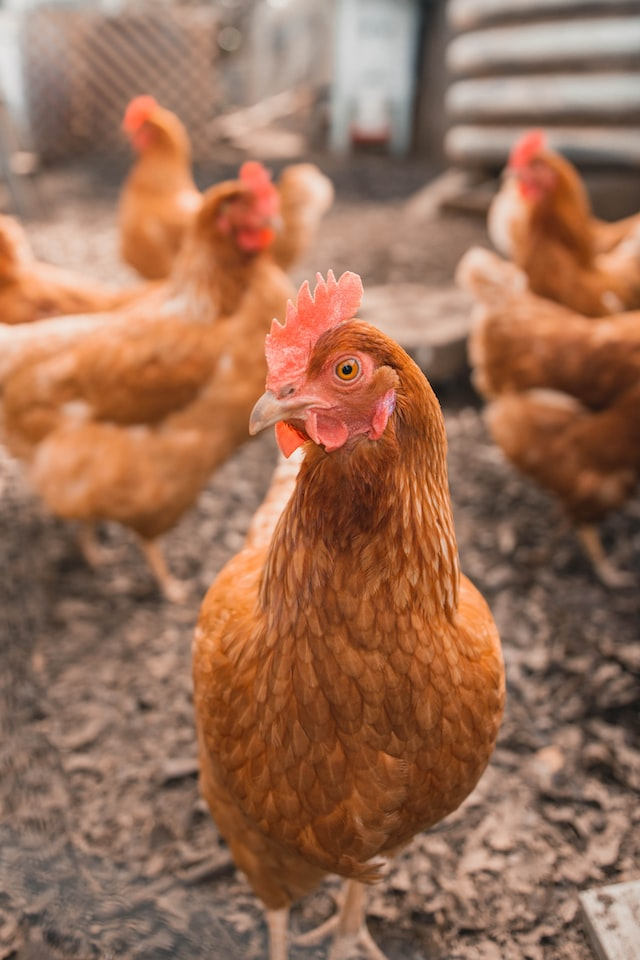

Hobbies
Naast mijn werk heb ik natuurlijk nog andere interesses, namelijk lopen, gamen en de tuin.

Ik probeer 2x per week 10 km te lopen. Buiten de fysieke voordelen zoals conditie en gewichtscontrole is het mentale aspect van lopen misschien wel het belangrijkste. Tijdens het lopen ben ik alleen met mezelf en kan ik mijn hoofd helemaal leegmaken of net een eureka-moment krijgen als de oplossing van een probleem me ineens te binnen schiet.

Ik ben een groot liefhebber van het voetbalsimulatiespel “Football manager”. Je moet in dit spel niet zelf voetballen, maar alles draait rond tactiek, cijfers en statistieken. Het draait om het analyseren van je eigen team en de tegenstander. Zo kan je je sterke punten accentueren en de zwakheden van de tegenpartij uitbuiten.

Zeker in de zomer spendeer ik ook heel wat uurtjes in de tuin. Zo rijd ik meerdere keren per week rond met mijn zitmaaier. Het monotone gebrom van de motor en geur van benzine in combinatie met het lijnen trekken in gazon is rustgevend. Het obligate pintje achteraf op mijn terras terwijl ik mijn prestaties overschouw, kan natuurlijk niet ontbreken.
Ook zorg ik elke dag voor de kippen samen met mijn dochter. Kijken of er een eitje in de nest ligt, is altijd heel leuk. Ze heeft ook kippen mogen kiezen, we hebbe een rosse, een witte en een zwarte kip. U kan al raden waar ze de inspiratie heeft gehaald.